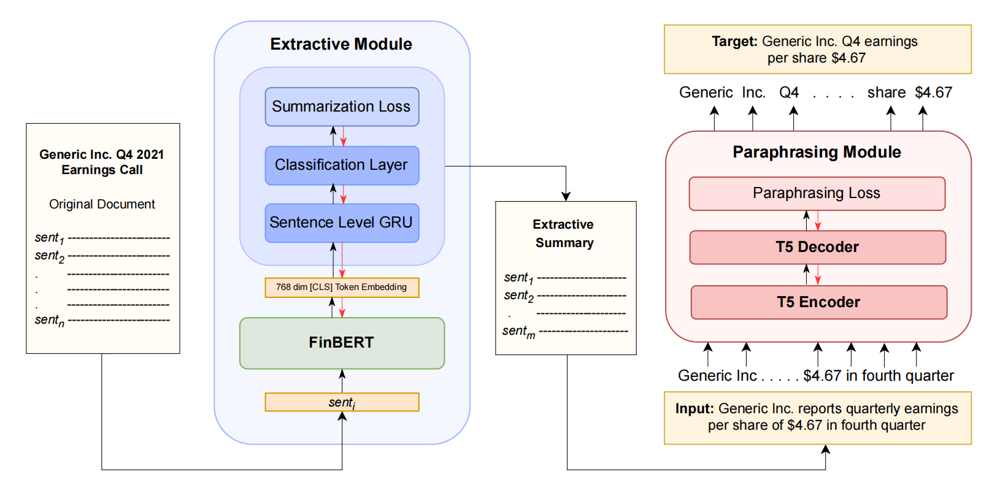
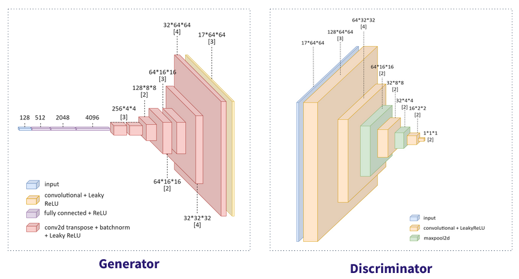
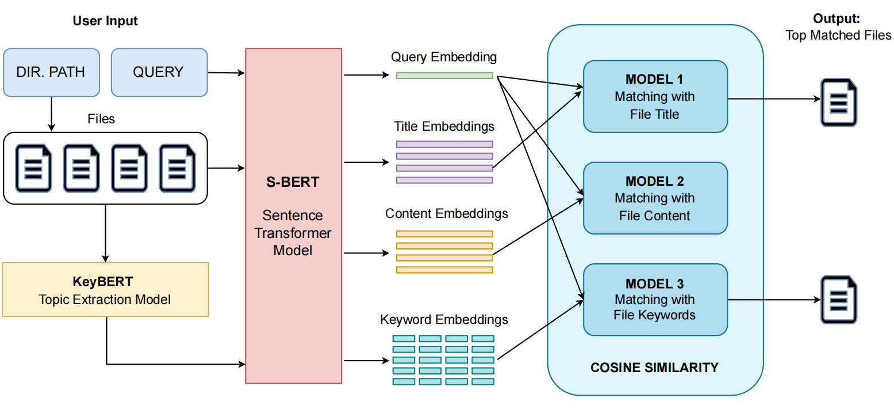
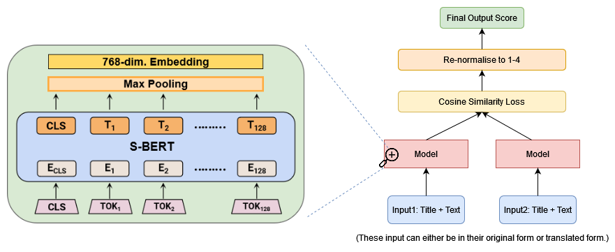
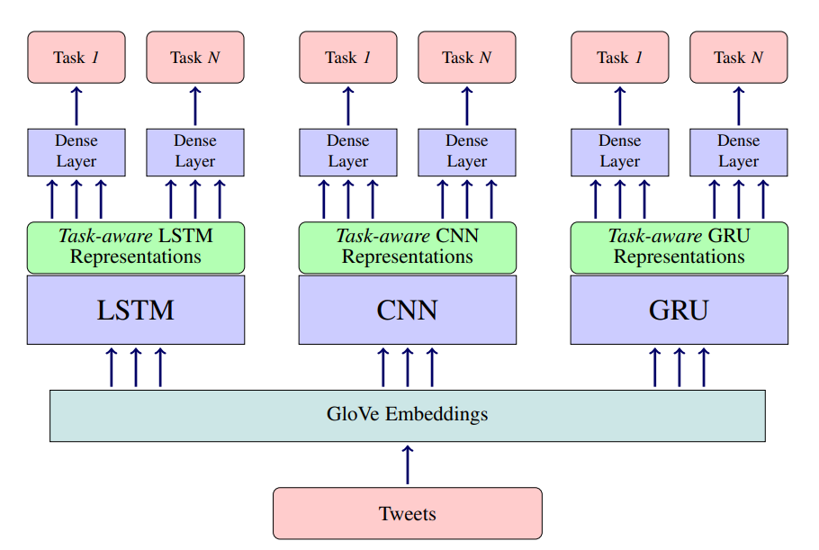
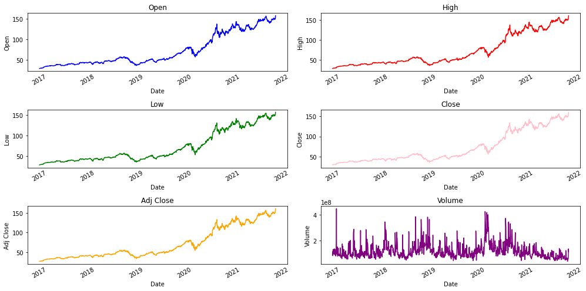

A technology driven by Speech Recognition and Natural Language Processing that notifies the user when he/she is being called when using earphones/headphones. I firmly believe that the idea of “Enjoying music and letting your earbuds to do the listening” can completely revolutionize the user experience. The model is to be deployed as an mobile application. Further, I intend to develop a learning-based model that identifies vehicle horn sounds and notifies people using headphones while driving. This can potentially reduce number of road accidents.
Machine Learning Projects
ECTSum: Bullet Point Summarization of Long Earnings Call Transcripts
In association with Goldman Sachs | -
Created ECTSum, a new dataset using Earnings Call Transcripts (ECTs) of publicly traded companies as documents, and short expert-written summaries derived from corresponding Reuters articles. ECTs are long unstructured documents without any prescribed length limit or format. Benchmarked the dataset using state-of-the-art summarization models such as BigBird, SummaRuNNer and Longformer Encoder Decoder. Proposed FinBERT-T5 based paraphraser model with 13.3% ROUGE-2 gain and 8.5% less factual hallucination. Published Long Paper at EMNLP 2022
Project Link: ECTSum: Bullet Point Summarization of Long ECTs
Paper Link: Long Paper in EMNLP 2022 (Main Conference)

Video Game Level Generation using DCGAN
Advisor: Prof. Adway Mitra, Centre of Excellence in Artificial Intelligence, IIT Kharagpur | -
Generating levels for video games using Machine Learning models instead of human designers is becoming increasingly common. In this paper, we explore an alternative GAN architecture applied to the creation of playable game levels with a focus on Super Mario games. We also compare latent space search techniques to optimise inputs to the GAN from within the latent vector space
Project Link: Video Game Level Generation using DCGAN
Paper Link: VGL-GAN Paper

Neural File Search Engine
Advisor: Prof. Palash Dey, Department of Computer Science & Engineering, IIT Kharagpur | -
Designed and developed CoeuSearch, an NLP based intelligent local-file search engine that searches for relevant documents in a directory, considering the semantics of the file’s name as well as it's content. Invented three-fold search strategy using SBERT based dual encoders and KeyBERT Topic Extraction model. Employed cache optimization techniques to reduce response time by 70%
Project Link: Neural File Search Engine

Multilingual News Article Similarity
Advisor: Prof. Pawan Goyal, Department of Computer Science & Engineering, IIT Kharagpur | -
Leveraged the knowledge of pre-trained language models (mBERT and XLM) to predict the overall similarity between a given pair of articles. We propsed a model based on Sentence Transformer to estimate the contextualized embeddings coupled with cosine similarity. Our proposed approach using the Multilingual Setting is ranked 19th in the official SemEval 2022 Task 8 Leaderboard with a Pearson correlation score of 0.721.
Project Link: Multilingual News Article Similarity

Multitasking Framework for Emotional Analysis
Advisor: Prof. Pawan Goyal, Department of Computer Science & Engineering, IIT Kharagpur | -
This project is an implementation of the research paper All-in-One: Emotion, Sentiment and Intensity Prediction using a Multi-task Ensemble Framework which proposes a multi-task ensemble framework that jointly learns multiple related problems. The ensemble model aims to leverage the learned representations of three deep learning models (i.e., CNN, LSTM and GRU) and a hand-crafted feature representation for the predictions. Achieved 5.2% increase in accuracy and 0.33 increase in Pearson co-relation score for emotion classification and intensity tasks respectively.
Project Link: Multitasking Framework for Emotional Analysis

Stock Price Movement Prediction using Sentiment Analysis
Advisor: Prof. Adway Mitra, Department of Computer Science & Engineering, IIT Kharagpur | -
Worked on establishing statistical correlation between social media sentiment and stock price movement of companies. Performed sentiment analysis using BERT on company's official tweets to generate social media sentiment score. Used it as an additional signal in LSTM network built on top of features like Open Stock price, Close Stock price, Low price, High price, Volume and Adj Close Price to predict the stock prices.
Project Link: Stock Price Movement Prediction using Sentiment Analysis

Aurix, Smart-Electroacoustic-Transducers
Self Project | -